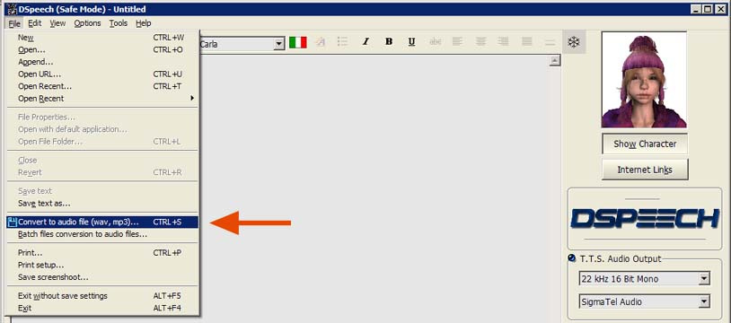
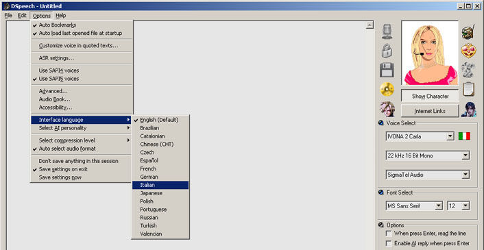
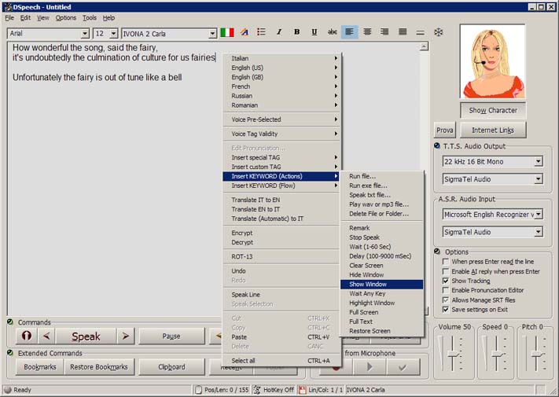

Δ DSpeech Tutorial Passo-Passo Δ

|
- COME FAR PARLARE DSPEECH NELLA LINGUA VOLUTA - Bisogna prima di tutto scaricare e installare una o più voci in Windows che poi DSpeech riconoscerà automaticamente. Esistono due tipi di voci, le Sapi4 (vecchie, e di bassa qualità) e le Sapi5 (moderne e di qualità molto superiore), di conseguenza, USATE SOLO VOCI SAPI5, ecco alcuni links:
- INSTALLARE LE VOCI IN WINDOWS - Le voci che avete appena scaricato vanno installate in Windows come se si
trattasse di semplici programmi, fatto ciò, esse
divengono disponibili per tutti i programmi che ne fanno uso. - AVVIARE DSPEECH - Dal seguente Link è possibile scaricare l'ultima versione di DSpeech, il programma NON RICHIEDE INSTALLAZIONE, per cui vi basterà scompattare lo ZIP dove vi pare (ad esempio sul Desktop) e fare doppio click sul file "DSpeech.exe" per avviarlo.
- SALVARE IN MP3 - Per convertire il testo in MP3 è sufficiente andare nel menu
"File" e scegliere "Convert in audio file..." come nella figura qui
sotto:  - COME CREARE DIALOGHI -
- COME AVERE ANCHE L'INTERFACCIA NELLA LINGUA DESIDERATA - Volendo è possibile convertire
l'interfaccia di DSpeech nella lingua desiderata, in questo
modo, ad esempio, invece del pulsante "Show Character" ci sarà
"Mostra Personaggio" e via così. Dal menu "Options" --> "Interface language", scegliere la lingua desiderata come mostra la foto seguente e poi cliccare Ok.  |


- FUNZIONI AVANZATE - DSpeech è un programma molto completo e il tutorial qui presente non ne esplora che una minima parte, se si vuole scoprire qualche altra sua funzionalità si può iniziare col CLICK DESTRO DEL MOUSE che espone un gran numero di funzioni avanzate, compresi degli esempi del linguaggio di Script che DSpeech supporta e col quale può essere programmato (vedi la foto qui sotto).  |
 |